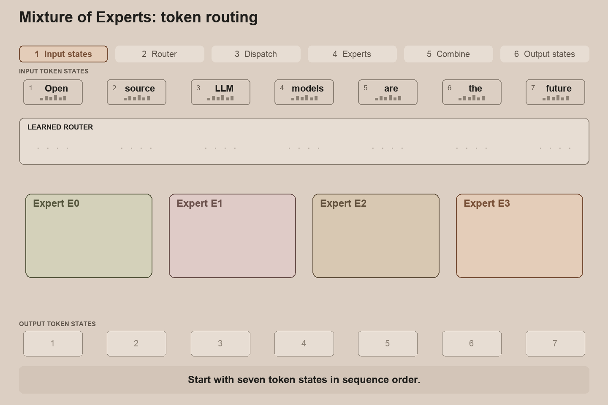
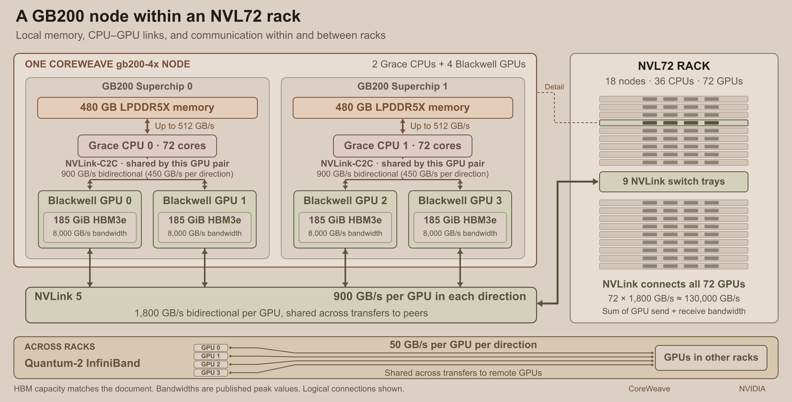
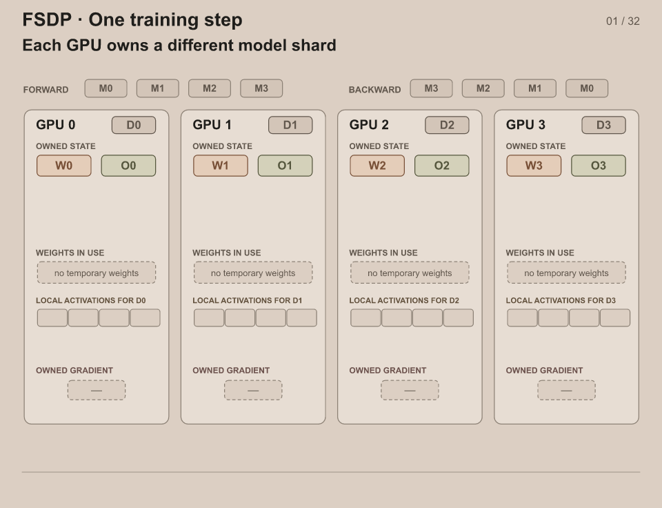
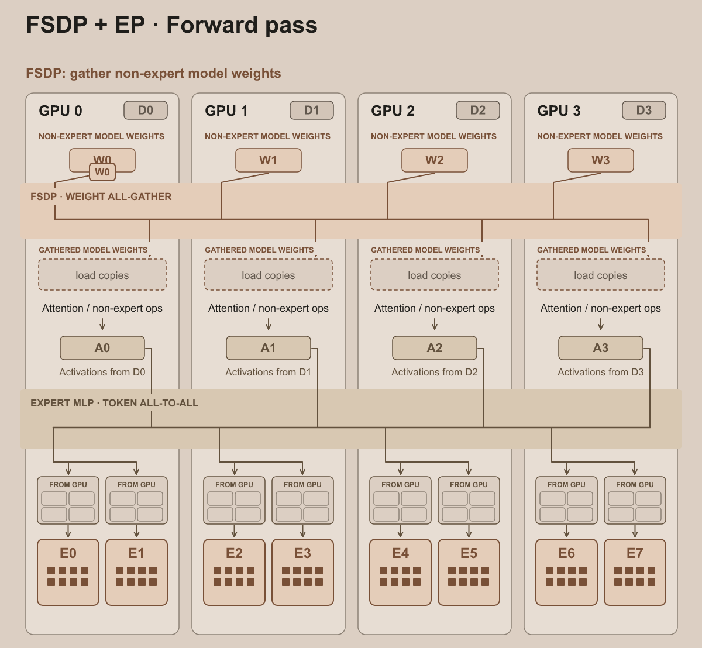
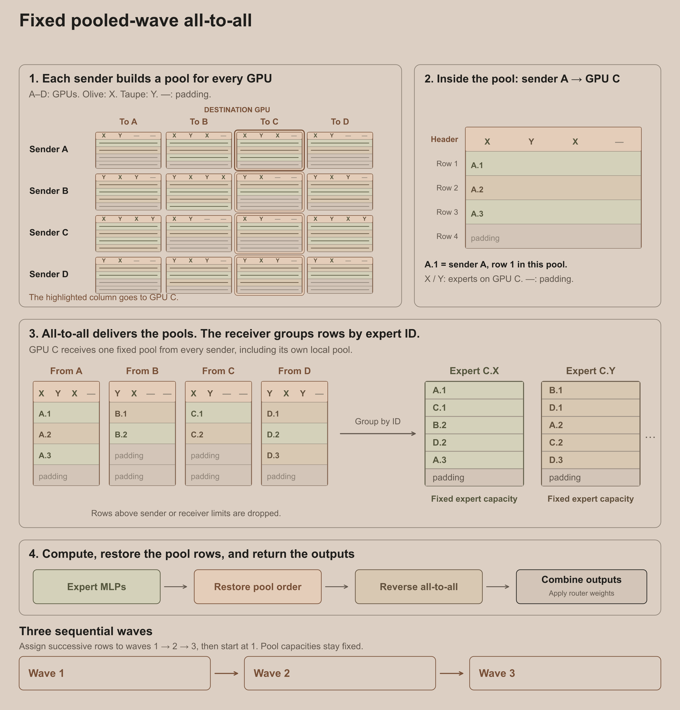
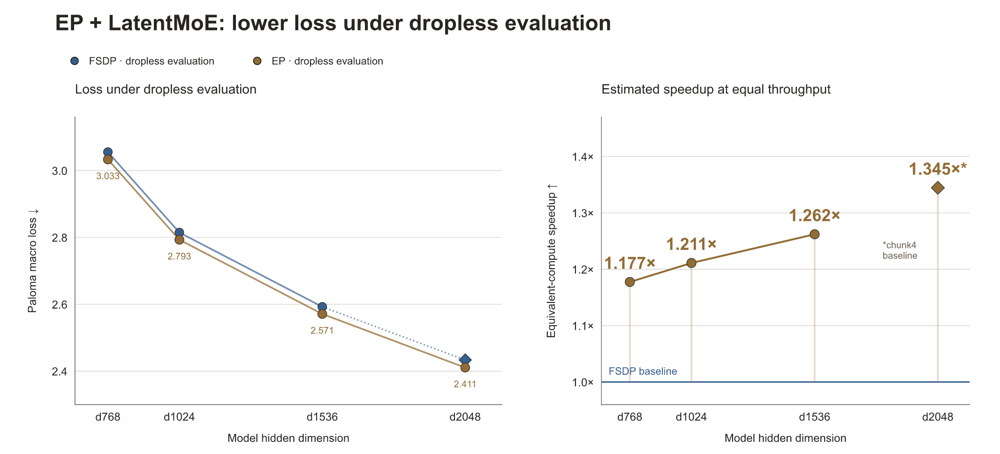
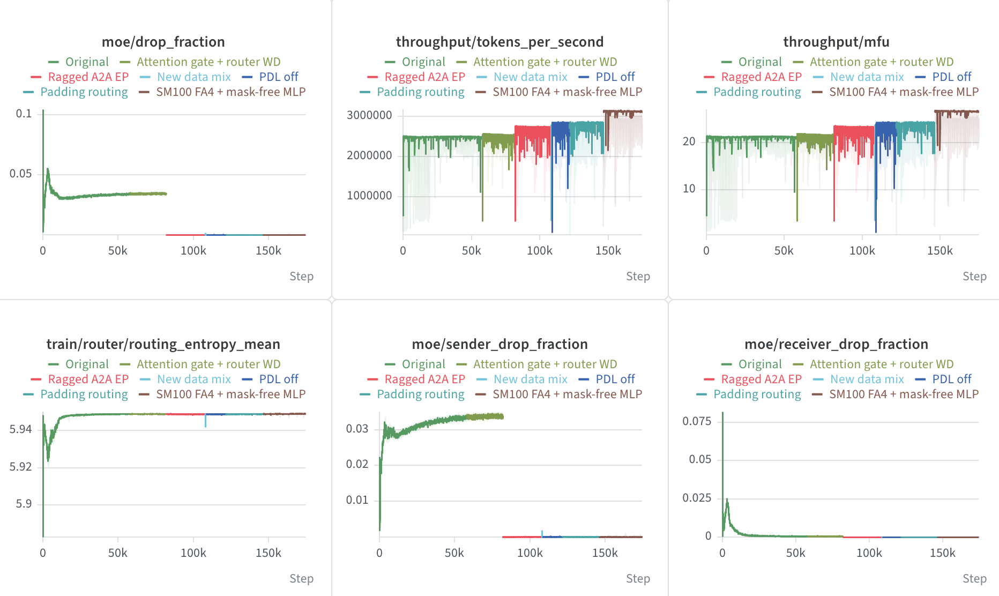

Open Athena把360B-A23B的MoE推到535B-A23B：同样约23B激活参数，总参数大50%。英雄训练跑在NVL72上，自研固定容量EP内核达到21.5% MFU，指派丢弃率3.4%。
Open Athena选MoE的理由直接：给定算力预算下拿到更大的模型容量。早期小实验验证了32B总参数、5B激活的MoE跑326B token的方案。MoE每个token只激活部分专家权重，总参数可以涨而每token算量不按比例涨；相比同等总参数的稠密模型，MoE每token的FLOPs一般更少，固定FLOP预算下能训更多token。实际收益还取决于通信、padding和内核效率。
从FSDP到现成内核再到自研内核的路径上，每个选项都在token丢弃率、吞吐和模型容量之间权衡。下面是这段路的记录。

Transformer训练依赖高效矩阵乘，操作数和输出得塞进加速器HBM。BF16/FP32混合精度加Adam优化器，模型状态每参数16字节：535B模型光BF16权重、BF16梯度、FP32主权重、FP32优化器状态就要近8 TiB，还不算激活、通信缓冲。单张B200只有185 GiB：必须多卡分片。
分片就是把权重或激活切到多加速器上：DP、FSDP、EP都是分片方法，实际经常组合用。跨节点/机架分片引入通信，代价看互联：NVLink域内比跨机架的InfiniBand快。训练用NVL72机架：每机架保证16节点、每节点4张B200；机架内每GPU每方向900 GB/s NVLink带宽，机架间InfiniBand每GPU每方向50 GB/s：18倍差距。64张卡在线的机架算健康，单机架约11.6 TiB HBM。

后文的“token”指流经LLM层的token向量表示。EP语境里，“dispatch”指把token送到被指派的专家，“combine”指把专家输出送回源GPU并合成层输出。
分片方式怎么选？DP把batch切到各GPU，固定全局batch下每GPU处理的token少、激活内存降，但普通DP每卡存全量参数、梯度和优化器状态：模型状态超单卡内存就无解。
FSDP把权重、梯度、优化器状态也切开：每GPU处理不同的batch分片，算一层前先gather权重各自算自己的token，反向算出梯度后再合并、把分片分发回负责更新的GPU。FSDP用网络通信换更大的模型。
NVL72机架的内存和互联带宽允许纯FSDP高效训大模型。最初计划是用纯FSDP训360B-A23B：单机架能塞下的最大模型。然后问题变成：能不能把模型容量再往上推？
互联带宽对FSDP效率影响巨大：跨机架分片的通信代价高一个数量级；GPU可以在传输时做别的计算（通信/计算重叠）来掩盖。

把MoE从小实验放大到英雄形状，路由专家MLP权重很快占了权重的绝大多数：360B总参数的模型里约97% 是专家MLP权重。纯FSDP里每GPU计算前要gather全部专家权重，这些临时权重叠在优化器状态、梯度和激活之上。
EP让专家权重分片常驻各GPU：把token表示送到拥有被选专家的GPU，算完把输出送回来。EP不gather全部专家权重，也解锁了更大的总容量形状：535B-A23B，同样约23B激活参数下模型大50%。
具体配置：384个路由专家，每token激活8个，另有2个共享专家处理每个token；LatentMoE把路由token从6144维投影到3072维再dispatch，dispatch和返回的token payload减半。路由专家权重EP分片，共享专家和大部分非专家权重FSDP分片。
笔算对比（平衡路由、忽略padding/元数据/反向通信）：同样模型形状，FSDP前向每GPU每层要传约20 GiB路由专家权重；EP的dispatch+combine每GPU每层约6 GiB。固定top-k、token宽度、token数、GPU数时，专家越多，FSDP通信代价越高，EP的token payload不变。

MoE里学到的路由器给每个专家分配的token数随路由权重和数据波动。哪个集合通信能高效处理这种变长指派？路由不均衡实现上怎么处理？
专用EP通信库有DeepEP、Hybrid-EP、NCCL EP、MoonEP，还有Mixture-of-Kittens这类MoE megakernel：大多在JAX/XLA环境里直接用不了。ragged-all-to-all支持变长数据片，天生适合EP通信，但早期实验只有15% MFU，还遇到过慢传输、失败和NCCL hang（早期用的是不同模型和精度配置，所以后来的MFU数字不能全算通信内核的功劳）。
profile显示机架内网络根本没打满，计算通信重叠远非最优。把ragged-all-to-all的问题报给NVIDIA后，团队转向自研EP通信内核。GPU配额比预期到得早，更新后的计划是：以不低于20% MFU的体面下限支撑最优模型形状，尽快开英雄训练，边训边改内核。
自研的fixed-pooled-wave-all-to-all给token指派预留静态容量：每个发送GPU给每个目标GPU建一个池，本地6个专家共享池；忙的专家可以用闲专家没用掉的传输槽。容量因子控制给不均衡留多少余量：乘在均衡路由预期指派数上，sender容量按发送-目标对算，receiver容量按专家、跨所有发送方算。目标池满了发送方丢指派，专家容量满了接收方丢指派；容量因子越大丢得越少，但内存和通信开销越大。接收方按轮询从各源GPU取指派，减少发送顺序偏差。
固定容量让团队能用久经考验的高效all-to-all集合通信和GEMM做MLP计算；本地专家ID跟着激活payload走，接收方按ID分组行，不用单独的元数据集合通信。dispatch和combine分3个token波次，降内存占用：发送和接收缓冲只按一波配，XLA调度时可能重叠部分波次。

单机架、4k序列长度下达到约256k tokens/s，中位MFU 24%、中位指派丢弃率2.4%（200步跑的最后50步，sender容量因子1.05、receiver 1.33）。
token-expert指派丢弃率是因容量溢出被丢的指派占比。某个token的某条指派出局时，输出token还能拿到存活专家指派、共享专家和残差路的贡献。实验里固定每GPU输入token数时序列越长丢弃率越高：同一序列的token倾向选相同专家。
535B-A23B有了高效的EP+FSDP配置，丢弃率小但非零；替代方案是360B-A23B的无丢弃纯FSDP。即使预期效率和丢弃率都能改进，也得先搞清最坏情况：观测到的丢弃率会不会抵消大模型的容量优势？
四级扩展梯实验（54M到约1B激活参数）对比小FSDP模型和大EP+LatentMoE模型：EP度、每机架batch、序列长度都按英雄训练的预期值，逼近它的丢弃行为。无丢弃评测下，EP+LatentMoE在每个尺寸上loss都更低，尽管训练丢弃率约5.5-7.1%。等吞吐假设下，loss差对应约18-35% 的算力效率增益；loss标度公式估计FSDP要1.18-1.35倍算力才能追上EP的loss。
结论支持选EP：测试配置里有指派丢弃，大模型的loss优势依然成立。

固定容量EP让535B-A23B可训，扩展梯支持用小的指派丢弃率换更大的模型容量。英雄训练的公开WandB报告已发布。
丢弃率面板里指派丢弃率稳定在约3.5%，丢弃大多来自发送池；接收方丢弃训练早期就降到接近零，路由熵之后基本稳定。固定容量内核在生产训练里维持约21.5% MFU。
与此同时ragged-all-to-all的修复也在推进。约82k步时切到改进版ragged-all-to-all：指派丢弃几乎归零，MFU升到约23%。后续还有改动，ragged-all-to-all的修复和改进计划另写一篇。

@misc{wojdyla2026_expert_parallelism,
author = {Wojdyla, Rafal},
title = {Expert parallelism at hero scale},
year = {2026},
month = {sep},
howpublished = {\url{https://www.openathena.ai/blog/expert-parallelism/}},
note = {Open Athena Blog}
}参考：https://openathena.ai/blog/expert-parallelism/